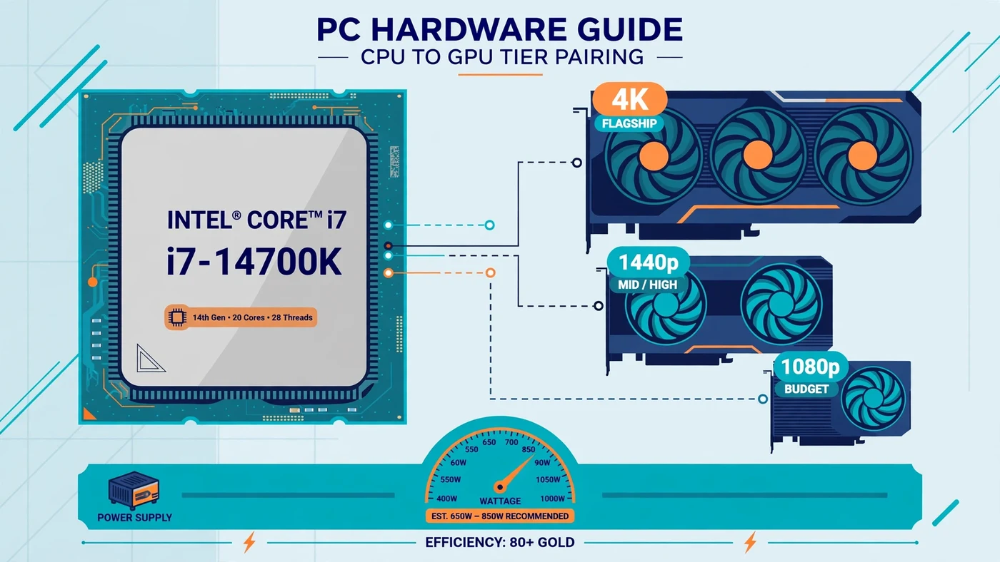

Best GPU for i7-14700K: Balanced Pairing Guide for 1440p and 4K
The best GPU for i7-14700K is not one card — it is the card that matches your monitor. For most owners, that means the RTX 5070 Ti at 1440p high refresh, the RTX 5080 for serious 4K, and a budget card like the Intel Arc B580 or RTX 5060 if you still play at 1080p. The i7-14700K is a strong, flexible processor with 20 cores and 28 threads, so it can feed anything from a budget card to a flagship — the mistake is buying the wrong tier for your resolution, not the wrong brand. This guide works through the tiers so you can match the card to the monitor you actually have.

Best GPU for i7-14700K: The Short Answer
For the typical i7-14700K owner playing at 1440p, the best GPU for i7-14700K is the RTX 5070 Ti with 16 GB of VRAM: fast enough for high-refresh 1440p in demanding games, with enough memory for modern textures and DLSS 4 support to stretch its life. The RTX 5070 is the value alternative, and the RX 9070 XT is the AMD alternative for players who mostly care about raster performance. For 4K, step up to the RTX 5080. For 1080p esports, do not buy either — the Arc B580 or RTX 5060 gives you the frames a 1080p monitor can show, and the money saved buys a better monitor or stays in your pocket.
What the i7-14700K Can Actually Feed
The Core i7-14700K is a 14th-generation Raptor Lake Refresh chip with 20 cores and 28 threads — 8 Performance cores and 12 Efficient cores — boosting up to 5.6 GHz, according to Intel's official specifications. Its base power is 125W and its maximum turbo power is 253W, which matters when you size the power supply. It sits on the LGA 1700 socket, supports DDR5 and DDR4 memory depending on the board, and includes Intel UHD 770 integrated graphics for display output and troubleshooting.
In practice that means headroom: in most games the processor is not the limit at all — the graphics card is. Its strong single-thread speed stays ahead of the frame-preparation work even for a flagship card at 1440p and 4K, and its Efficient cores absorb background work like Discord and streaming without stealing time from the game thread. So the question is rarely "can the CPU keep up" and almost always "does this card match my monitor" — the tier logic our CPU and GPU pairing guide explains in general terms. One caveat: at 1080p with a flagship card the balance flips, because the card finishes frames so quickly that the CPU has only a few milliseconds to prepare the next one, as our resolution bottleneck guide explains.
Best GPU for i7-14700K by Tier: Quick Comparison
Use this table as a map, then read the tier that matches your monitor. Prices change often, so treat the tier — not a single sale price — as the decision.
| GPU | VRAM | Best for | Why it fits |
|---|---|---|---|
| Intel Arc B580 | 12 GB | Budget 1080p, entry 1440p | Low cost, generous VRAM, CPU stays well ahead |
| RTX 5060 | 8 GB | Budget 1080p esports | Efficient entry card with DLSS; 8 GB limits 1440p use |
| RTX 5060 Ti 16 GB | 16 GB | Budget 1440p | Strong value, 16 GB of headroom for high settings |
| RTX 5070 | 12 GB | Balanced 1440p | Fast 1440p card with DLSS 4; CPU keeps up easily |
| RX 9070 | 16 GB | 1440p raster value | Strong raster speed and 16 GB for modern textures |
| RTX 5070 Ti | 16 GB | 1440p high refresh, entry 4K | Best all-round balance: ray tracing, DLSS 4, 16 GB |
| RX 9070 XT | 16 GB | 1440p and 4K raster value | Flagship-class raster speed; weaker ray tracing |
| RTX 5080 | 16 GB | Serious 4K | Flagship pace for 4K high refresh; CPU keeps up at 1440p and 4K |
Budget Tier: 1080p Esports and Entry Gaming
If your monitor is 1080p and your main games are Valorant, Counter-Strike 2, Rocket League, Fortnite on competitive settings or older titles, you do not need a high-end card. Competitive games at 1080p are light on the GPU and heavy on the CPU, where this processor shines. The Intel Arc B580 with 12 GB is the sensible budget pick: it handles 1080p comfortably and can stretch into 1440p at medium settings. The RTX 5060 with 8 GB suits a strict 1080p build — efficient, with DLSS support — but its 8 GB of VRAM is a real limit if you later move to 1440p with high textures. Do not buy an RTX 5080 for a 1080p 60 Hz monitor: you will get frame rates you cannot see.
Best GPU for i7-14700K at 1440p High Refresh
For most i7-14700K owners, 1440p is where this CPU earns its keep. The RTX 5060 Ti 16 GB is the budget 1440p pick — its 16 GB of VRAM removes the memory anxiety that hangs over 8 GB cards at 1440p with high textures. The RTX 5070 is the step up, and our best CPU for RTX 5070 guide reaches the same conclusion from the other direction. The RTX 5070 Ti is the pick if the budget allows it — 16 GB, strong ray tracing, DLSS 4 with Multi Frame Generation, and enough speed to hold high-refresh 1440p in demanding games. The RX 9070 and RX 9070 XT are the AMD alternatives, with FSR 4 upscaling as the counterpart to DLSS; choose them if you mostly play raster-heavy games and do not put a premium on ray tracing. Upscaling changes what "enough" means: DLSS and FSR render at a lower internal resolution and reconstruct the image, buying real frame rate at 1440p. Our DLSS and frame generation guide explains when upscaling helps and when it only hides the real problem.
Best GPU for i7-14700K at 4K
At 4K, the i7-14700K is in its comfort zone. Every frame carries so much pixel work that the graphics card is the limit in nearly every game, and the processor's exact speed stops mattering — a strong CPU like this one simply never gets in the way. The RTX 5080 with 16 GB is the serious 4K pick: it holds high settings at 4K in demanding games and handles ray tracing better than any card below it. The RTX 5070 Ti is the entry 4K option — it plays at 4K, especially with DLSS upscaling switched on, but it will ask you to turn a setting down sooner. The RX 9070 XT is the value alternative for 4K raster gaming. Do not judge the pairing by 1080p numbers: a card that looks CPU-limited at 1080p in a review is not a bad 4K card.
Will the i7-14700K Bottleneck an RTX 5080?
At 1440p and 4K, no — the i7-14700K will not meaningfully bottleneck an RTX 5080. At those resolutions the GPU is the limiting factor in almost every game, and the processor has more than enough single-thread speed and cores to keep the card fed. At 1080p the story changes, but not because the pairing is bad: the card finishes each frame so quickly that the CPU must prepare the next one in just a few milliseconds, and in CPU-heavy games chasing very high frame rates the processor becomes the ceiling. That is true of every current CPU with a flagship card at 1080p — the fix is a higher resolution, not a faster CPU. If you already own this pairing, the test takes five minutes: play your most demanding game and watch GPU usage. If the card sits near full load, the pairing is balanced for that game at that resolution. If you are choosing a CPU for this card from scratch instead, our best CPU for RTX 5080 guide compares the chips that pair best with it at each resolution. Our how to check a PC bottleneck guide walks through the test, and our good bottleneck percentage guide explains why a small number on a calculator is not a reason to panic.
How Much VRAM Do You Need With This CPU?
VRAM is the quiet part of this decision, and it is where the cheapest cards fail first. The i7-14700K will serve you for years, but a card with too little memory can start stuttering on texture-heavy games long before its chip runs out of speed. When VRAM fills up, textures stream in late and you get hitches on scene changes — a problem that looks like a slow GPU but is really a full memory pool. The rough guide: 8 GB is enough for 1080p competitive settings, but it is already tight for modern AAA titles at high textures. Twelve gigabytes covers 1080p comfortably and most 1440p gaming. Sixteen gigabytes is the sweet spot for 1440p high settings and the realistic minimum for 4K — and the main reason the 5060 Ti 16 GB, the 5070 Ti, the 9070 XT and the 5080 all carry it. Ray tracing raises the stakes further, so if it matters to you, treat 16 GB as the floor. Our VRAM guide and ray tracing bottleneck guide break down what each resolution and feature actually needs.
Power Supply, Cooling and RAM Checks
A flagship-tier pairing is only as stable as the parts around it, and the i7-14700K is a demanding guest: Intel rates its maximum turbo power at 253W. As a rule of thumb, a quality 650W unit covers the budget and mid-range pairings in this guide, 750W is the usual pick for the 1440p tier with a 5070 Ti-class card, and flagship 4K builds with an RTX 5080 call for 850W. Check the card maker's minimum PSU recommendation for the exact model, and prefer a unit with a native 12V-2x6 connector for RTX 50-series cards. A weak PSU causes crashes that look like a GPU problem — see our PSU bottleneck guide. Cooling matters just as much: a 14700K under a weak cooler will throttle under sustained load, and a throttling processor looks exactly like a slow processor — see our thermal throttling guide. A capable tower air cooler or a 240mm liquid cooler is the realistic floor. And check the memory: 32 GB of DDR5 in dual channel, with the XMP profile enabled in the BIOS, is the sensible target at this tier — see our XMP/EXPO guide and single vs dual channel guide.
GPUs to Skip With the i7-14700K
Some cards are poor partners for this CPU, and not because they are bad cards — because the pairing wastes one side of it. First, entry-level cards with 6 GB or less of VRAM, or older mid-range cards: they leave a 20-core processor idle while the card struggles. Second, a flagship card bought for a 1080p 60 Hz monitor, as warned above. Third, a last-generation flagship at near-current prices when a current mid-range card with more VRAM and newer upscaling costs the same. Finally, skip any card that does not physically fit your case or that your power supply cannot feed: measure the case clearance and check the connector count before you order.
How to Check Your Pairing Before You Buy
Before spending anything, run the combination through the PC Bottleneck Calculator and read its methodology page so you know what the estimate means — it is a starting point, not a verdict. Then check the three things a calculator cannot see: your monitor's resolution and refresh rate, your power supply's wattage and connectors, and your case's clearance for the card's length. After the card is installed, verify the pairing in your own games: play the games you actually play and watch GPU usage and per-core CPU usage. If the GPU sits near full load, the pairing is balanced; if it sits low while a CPU core is maxed out, the processor is the limit in that game — and the fix may be a settings change, not a new part. If the numbers surprise you, our low GPU usage guide covers the cases where the card is not being used properly.
Free PC Bottleneck Calculator — Estimate CPU and GPU balance for your resolution and workload: check whether your CPU, GPU or VRAM is the slow half of the frame on the PC Bottleneck Calculator (see its methodology page) before you buy a new graphics card for your i7-14700K.
Conclusion
The best GPU for i7-14700K is the card that matches your monitor: the RTX 5070 Ti for high-refresh 1440p, the RTX 5080 for serious 4K, the RTX 5060 Ti 16 GB or RTX 5070 for value 1440p, and the Arc B580 or RTX 5060 for 1080p esports. The processor itself is rarely the limit — with 20 cores and 28 threads it can feed every tier in this guide — so the decision is about resolution, VRAM and the power supply, not about finding a card the CPU can "handle". Buy 16 GB of VRAM for 1440p and above, size the PSU for the 14700K's 253W turbo draw, enable XMP and dual-channel memory, and check the pairing on the calculator before you order.
Frequently Asked Questions
What GPU should I pair with an i7-14700K?
It depends on your monitor. For 1440p gaming, the RTX 5060 Ti 16GB or RTX 5070 are balanced picks, and the RTX 5070 Ti is the best all-round choice for high refresh rates. For 4K gaming, the RTX 5070 Ti or RTX 5080 make sense. For 1080p esports, the Intel Arc B580 or RTX 5060 are enough — a flagship card at 1080p mostly buys frames your monitor cannot show.
Will an i7-14700K bottleneck an RTX 5080?
No, not at 1440p or 4K, where the GPU is the limiting factor in almost every game. At 1080p with an RTX 5080, the CPU can become the limit in competitive titles pushing very high frame rates, because the card finishes each frame so quickly that the processor has to prepare the next one in just a few milliseconds. That is a resolution problem, not a bad pairing — the same combination is well balanced at 1440p and 4K.
Is the i7-14700K good for 4K gaming?
Yes. At 4K, each frame carries so much pixel work that the graphics card becomes the limit in nearly every game, so the CPU's exact speed matters far less than it does at 1080p. The i7-14700K has more than enough single-thread speed and cores to keep a flagship card fed at 4K, and it leaves headroom for background tasks and streaming at the same time.
How much RAM do I need with an i7-14700K and a new GPU?
Thirty-two gigabytes of DDR5 in dual channel is the sensible target for a build at this level, with the XMP or EXPO profile enabled so the memory runs at its rated speed. Sixteen gigabytes is the realistic minimum, but modern games and background apps can push past it, and a single RAM stick in single-channel mode costs real performance. Match the memory to the tier of card you buy — a flagship GPU deserves 32GB, not 16GB.
What PSU do I need for an i7-14700K and an RTX 5070 Ti?
A quality 750W power supply is the usual pick for this pairing, with a native 12V-2x6 connector for the graphics card and enough headroom for the i7-14700K, which can draw up to 253W under full turbo load. Check the card maker's minimum PSU recommendation for the exact model you buy, and do not reuse an old low-wattage unit — a power supply that cannot hold up under load causes crashes that look like a GPU problem.
Sources
Official documentation referenced in this guide:
- Intel ARK: Intel Core i7-14700K specifications (20 cores, 28 threads, up to 5.6 GHz, 125W base power, 253W maximum turbo power, LGA 1700)
- NVIDIA GeForce: RTX 50-series graphics cards (RTX 5070 family, DLSS 4 and Multi Frame Generation)
- AMD: Radeon RX 9070 graphics card (16 GB GDDR6, RDNA 4, FSR 4)
- Intel Developer: Locate and Resolve CPU-GPU Bottlenecks (how to tell a CPU limit from a GPU limit)